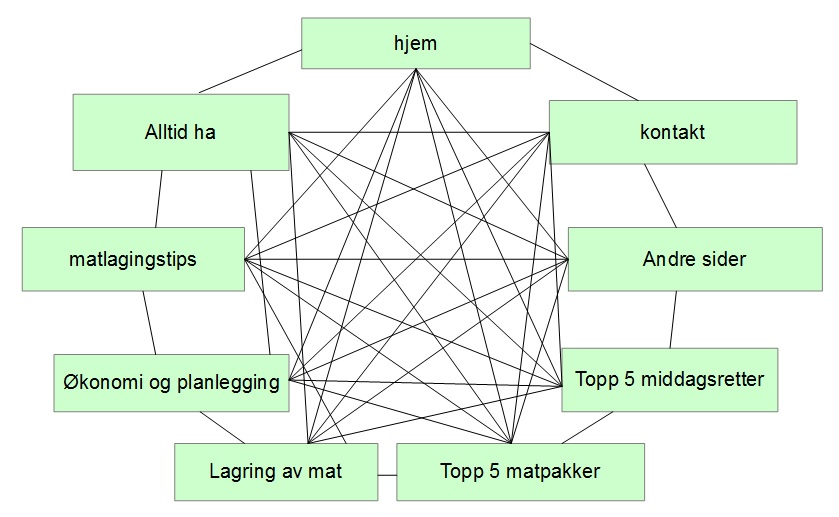
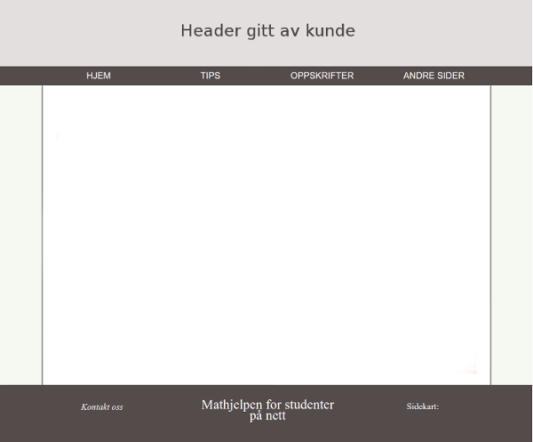
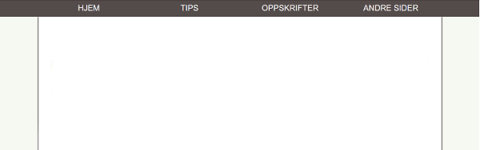
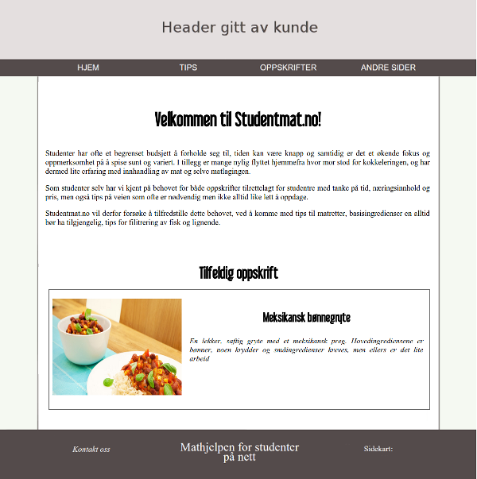
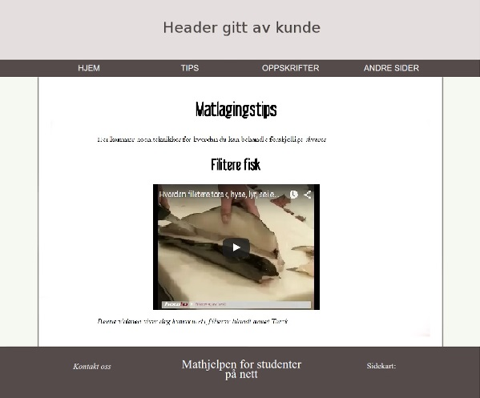
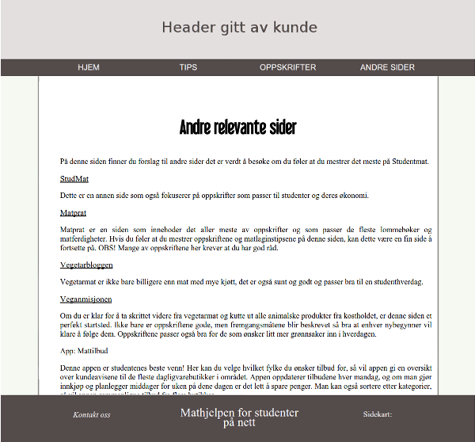
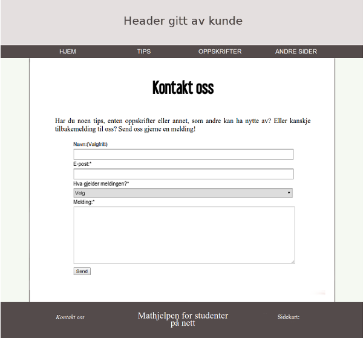
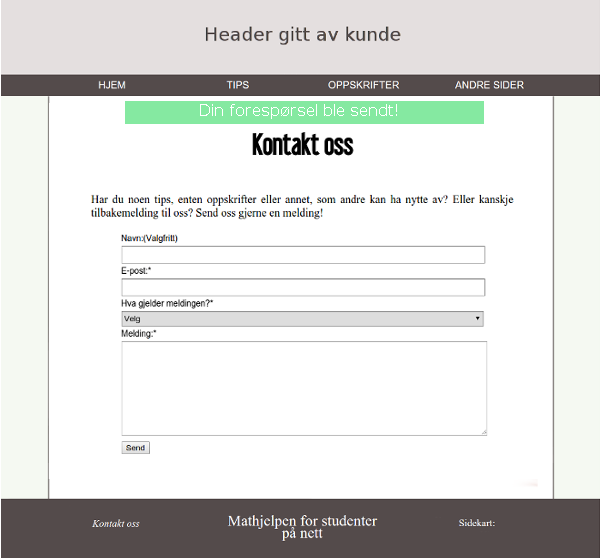
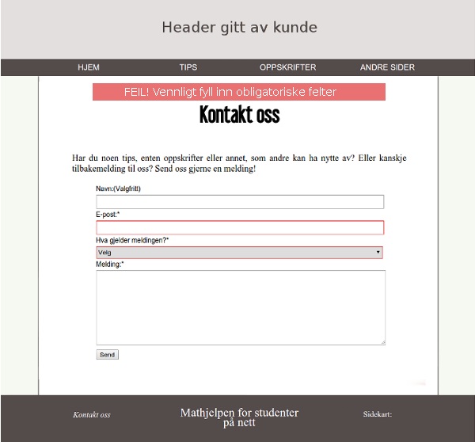

P2 Designdetaljer
Aasne, Dora Oline, Julie, Katrine
IT2805, 7. Oktober, 2015
Administreringsinformasjon
Klient: Studentforeningen i Trondheim (SfiT)
Websidens navn: StudentMat
Kontaktperson: Katrine Jordheim
Hensikt, mål og publikum
Hensikten med siden er å gi studenter en matside rettet mot deres behov. Studenter er ofte nye på kjøkkenet, med lite erfaring, penger og tid og dette kan lett føre til en nuddel- eller grandiosa-diett. SfiT ønsker av denne grunn å lage en side med tips til økonomi, middagsretter og matpakker, matlagingstips, basisingredienser og lignende, for å gjøre studenttilværelsen lettere på matfronten. Publikum er hovedsakelig studenter, men kan brukes av alle som finner siden nyttig.
Navigasjonsstruktur
Siden vil ha en navigasjonsbar på toppen av siden som vil være fiksert når man scroller og går til andre sider. Denne viser fire av sidene (hjem, tips, oppskrifter og andre linker). Når man holder musen over en av dem eller klikker, vil en drop-down meny dukke opp hvor man enten kan navigere seg til andre sider. Der det er hensiktsmessig kan man navigere seg rundt på siden ved hjelp av en ankermeny.
Ved å bruke denne strukturen er det mulig å lett manøvrere seg fra ei side til en annen, uten å måtte gå innom mange andre sider. På denne måten skal du kunne navigere deg fra en side til hvilken som helst annen side i løpet av kun et klikk. Dette gjør siden effektiv og tidsbesparende. Hovedgrunnen til at vi ønsker et oppsett som dette er at dagens studenter er vant med velfungerende systemet, og med at informasjon er lett tilgjengelig. Dersom en nettside ikke klarer å oppnå dette blir den tung å manøvrere, og brukeren vil stubstituere den med en annen side.
Figur 1 nananan
Sidens oppsett og utseende
Siden vil ha et enkelt og behagelig design som er felles for alle sidene. Siden vil bestå av en header med logo hentet inn fra kunden. Ved å trykke på logoen vil man til enhver tid kunne navigere seg tilbake til "hjem". Under headeren er navigasjonsbaren med et enkelt og stilrent design. Når man scroller nedover på siden vil navigasjonsbaren ligge øverst i vinduet, mens header forsvinner ut av vinduet. Dette gir funksjonalitet samtidig som det fjerner støymomenter på siden. Innholdet på siden vil ligge i midtstilt boks. Innhold i navigasjonsmeny, header og footer vil også være midtstilt med samme bredde som innholdsboksen. Da vil det bli enklere å lese innholdet, og designet vil set likt ut uavhengig av skjermstørrelse. Når du scroller deg nedover på siden og du kommer mot bunnen, vil footeren komme til syne da denne ligger etter alt innholdet på siden.
Hele designet på siden, innholdet vil være i den hvite boksen.
Når man scroller ned vil menyen henge igjen på toppen av siden.
Spesifikasjoner som gjelder alle sider er som følgende:
- Font: Overskrifter: "Helvetica" (h1, strl: 33pt), mellomtittel: "Helvetica" (h2, strl: 27pt) navigasjonsbar: "sans-serif" (Strl: 15pt) og sideinnhold: "Times New Roman" (Strl: 14 pt).
-
Fargetema:
- Tekst i navigasjonsbar: #FFFFFF, #544b4b når man holder musen over.
- Tekst i hovedinnhold: #000000.
- Tekst i footer: #FFFFFF
- Bakgrunnsfarge i hovedinnhold: #FFFFFF
- Bakgrunnsfarge på siden: #f5f9f2
- Bakgrunnsfarge på navigasjonsbar: #544b4b, #FFFFFF når man holder musen over.
- Bakgrunnsfarge på footer: #544b4b
- Skyggelegging av hovedinnhold: #544b4b.
- Bredde på innhold: 1000px.
- Linker: Generelt: font style italic og samme farge som resten av teksten. Kursiv med fargeforandring når holder musen over. Footer: Kursiv generelt, underlinjering når man holder musen over.
- Navigasjonsbar: All caps, "inverse" farger når man holder musen over. Når man holder musen over vil man kunne se en drop-down meny som er mørk og delvis gjennomsiktig. Linkene her har også inverse farger når man holder musen over.
- Header: 1000px. bredt headerbilde som kunden bidrar med. Denne skal ineholde en logo. Bakgrunnsfargen til logoen skal matche bakgrunnsfargen på headeren slik at det ser bra ut uavhengig av skjermstørrelse.
- Footer: Matcher navigasjonsbar for å gi et helhetlig inntrykk. Inneholder linker til sosialt media, link til kontaktskjema og sitemap.
- Logo: Kunden gir oss logo. Skal ha friske farger som passer til sidens fargetema og tema.
Sidens innhold
Home
Dette er den første siden brukeren kommer inn på. Denne siden vil inneholde litt info om bakgrunnen til siden, hva man kan forvente å finne her og en tilfeldig oppskrift. Sistnevnte vil genereres tilfeldig ved hjelp av javascript, og vil derfor være forskjellig hver gang man går inne på siden.

Alltid ha på kjøkkenet
- I innholdsboksen vil det være tre underbokser, en for kjøleskap, en for skap og en for fryser. Over dem vil det være et passende tegne-bilde
Middagsretter
-
Når en først åpner siden får en opp et lite bilde på ca. 125x75 px til venstre i boksen, og så navnet på oppskriften.
-
Når en trykker på bildet eller navnet vil en større div åpne seg og bildet vil gå opp til 400x300px og oppskrifen vil vise seg
-
Under bildet vil det være en boks med ingredienser, og til høyre for den en boks med fremgangsmåte
-
Nederst vil det vær en link til den opprinnelige oppskriften
Matpakkeoppskrifter
Samme oppsett som for middagsretter
Matlagingstips
På denne siden vil brukeren instruksjonenr til hvordan de gjør ting som å filitere fisk og koke egg. instruksjonene vil vær tilgjengelig i form av tekst og/eller video.

Tips
Andre nyttige sider
På denne siden vil det være en liste med likner til andre sider kunden mener kan være nyttig for sidens brukere. Under hver link vil det være en beskrivelse av det man vil finne på siden.
Listen vil ikke ha bullet-points, og linkene vil skille seg fra resten av teksten.
Kontakt oss
På denne siden skal man kunne gi tilbakemeldinger til siden. Både om man har funnet en feil, eller om man har forslag til innhold. Skjemaet som blir brukt har et enkelt design, det er få felter å fylle inn slik at det går rakst og at man kommer til poenget med en gang. Det er også en dropdown-meny som gjør at man ikke trenger to forskjellige skjemaer for å rapportere to forskjellige ting. Javascript vil bli brukt for å så det til å bli mer interaktivt, man vil få tilbakemelding når skjemaet er sendt, og om man ikke har fyllt inn alt riktig.
Skjemaet vil se slik ut.
Om man har fyllt inn alle feltene riktig, vil informasjonen bli sendt og man får en tilbakemelding som dette. Bakgrunnen er grønn for å vise at alt gikk greit.
Dersom man ikke har fyllt inn feltene riktig, vil man få en feilmelding der det står at man må fylle inn alle de obligatoriske feltene. Feltene som man mangler vil få en rød kant.
Minimumskrav
Vi planlegger å gjennomføre minimumskravene for bruk av Javascript på følgende måte.
Katrine og Julie:
- Skjemavalidering
- Highlighting av siden man er på i navigasjonsbar.
- Randomized oppskrift
Dora Oline og Aasne:
- Henting av innhold fra html til main-seksjonen på index-html.
- Navigasjonsbar med drop-down meny
- Fiksert navigasjonsbar
Plan
Organisatorisk oppsett
Vi har samlet alle filene våre i en mappe som heter studentmatProsjekt som vil bli opprettet nå vi kommer til kodingsfasen av prosjektet.
Liste over filer og mapper:
-
website/
general.css
index.html
script.js
-
alltidHa.html
footer.html
home.html
kontakt.html
lagring.html
linker
matpakker.html
middager.html
nav.html
okonomiOgPlanlegging.html
matlagingstips.html
html
-
bilde/
- header.jpg
-
BLT-sandwich.jpg
ertesuppe.jpg
falafler.jpg
gulrotsuppe.jpg
kyllingfrikasse.jpg
meksikanskbondegryte.jpg
ostskinkemuffins.jpg
pastasalat.jpg
pitaMedKremost.jpg
Pizzasnurrer.jpg
oppskriftsbilder/
-
icons/
cabinet.png
facebook.jpg
facebook.png
instagram.png
freezer.png
fridge.png
noun_34918_cc.png
noun_38566_cc.png
Arbeidsfordeling og frister
| Filenavn | Beskrivelse | Ansvar | Frist |
|---|---|---|---|
| index.html | Forsiden | Katrine | |
| nav.html | Alle | ||
| alltidHa.html | Dora Oline | ||
| matlagingstips.html | Julie | ||
| middager.html | Dora Oline | ||
| matpakker.html | Dora Oline | ||
| okonomiogplanlegging.html | Aasne | ||
| lagring.html | Aasne | ||
| andresider.html | Linker til andre sider | Katrine | |
| kontakt.html | Form for tilbakemelding | Katrine | |
| "design" | Alle | ||
| "javascript" | Alle | ||
| "style.css" | Alle |